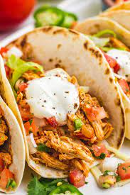

Chicken Tacos

These tacos are super simple in the fact that they are only made
with some chicken meat (that is super delicious and full of flavor)
and a simple onion and cilantro topping on corn tortillas. Give the
whole thing a squeeze of lime before you eat them, and that's a
wrap! I feel like keeping them simple is what makes them taste like
they are straight off of a food truck (you might also call them a
street taco), because you'll just pick them up and eat two. They
aren't fussy, they don't have a lot of layers, and they are so full
of flavor. You could add a bit of avocado or a sprinkle of cotija
cheese, but those aren't really needed. Keep it simple, friends!
INGREDIENTS
THE CHICKEN:
- pound boneless skinless chicken thighs
- teaspoon garlic powder
- ½ teaspoon onion powder
- ½ teaspoon cumin
- ½ teaspoon smoked paprika
- ½ teaspoon chili powder
- ½ teaspoon salt
- ½ teaspoon freshly ground black pepper
- Juice of 2 limes
- 1 tablespoon olive oil
FOR THE TOPPING:
- ⅓ cup finely chopped red or sweet onion
- ⅓ cup finely chopped cilantro
- 1 finely chopped jalapeño
- Juice of 1 lime
- Salt and pepper, to taste
- 1 lime, cut into 8 pieces
- 16 small corn tortillas for serving
INSTRUCTIONS
- In a large zipper-topped plastic baggie or in shallow
dish, add the chicken, all of the spices, lime juice,
and oil. Close the bag and use your hands to mix
everything together. If you are using a shallow dish,
use tongs to work the spices evenly into the chicken.
You can let this rest for up to a half-hour or work
with it right away. I like to let it rest a minute to
increase the flavor.
- Heat a large skillet over medium to medium-high heat.
When the skillet is hot, add a tablespoon of oil to the
pan and then add the chicken. Cook for 12 to 14 minutes,
turning once, until the chicken is cooked through.
Remove the chicken from the pan and let it rest for
10 minutes. If you have an extra-large chicken thigh,
you'll need to cook them longer, so turn down the heat
to medium and cook them until no longer pink (could
take up to 25 minutes or 12 minutes per side).
- While the chicken cooks, stir together the chicken taco
topping by placing the chopped onion, cilantro, jalapeño,
and the juice of one lime in a small bowl. Add salt and
pepper, and stir to combine.
- While the chicken rests, wipe your skillet clean with a
warm rag or paper towels, and place the skillet back on
the heat over medium-high to high heat. Place two tortillas
(still stacked together) on the skillet and cook until
the underside starts to char. Flip over and cook the
other side (so the middle of each tortilla won't be cooked
against the skillet but it will get warm all the way though).
Repeat with remaining tortillas.
- Chop the rested chicken into bite-sized pieces.
- To serve, place ⅛ of the chopped chicken in each set of
tortillas (still two stacked together) and top with ⅛ of your
onion mixture. Serve each taco with a wedge of lime to
squeeze over the taco just before serving.